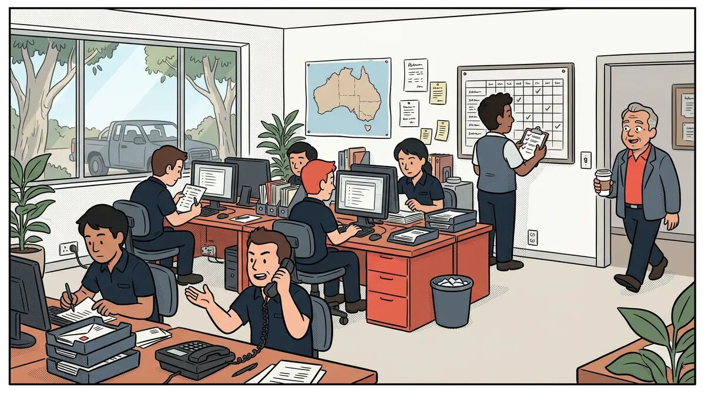

Anthropic has rebuilt Projects as one conversation that starts a thread for each job. It is in beta, for Pro and Max plans only, and it lives in Claude Code for now.
Beta · Checked 22 November 2026
Your projects in Claude chat and Cowork have not changed. They still work the way Set Up a Project Properly teaches, until Anthropic upgrades them. Anthropic has not given a date.
Team and Enterprise plans do not have the new version yet. Read on if you are on Pro or Max and want to try it, or if Claude has already moved one of your projects.

What it is
A project used to be a folder of chats. Now it is one conversation that runs the work for you.
You tell Claude what needs doing in the project conversation. Claude splits the work into threads. Each thread is a separate job that runs in the cloud, and it keeps running after you close your laptop. Every thread starts with the project’s files, instructions and memory. Claude then tells you what is done and what is waiting on you.
A quick question gets answered in the main conversation. New work goes to a new thread, or to one already working in that area. Ask for three unrelated jobs in one message and you get three threads.
Who can get it
Look for Projects in the left sidebar, or under More. If it is not there, join the waitlist at claude.com/form/projects.
You see Get started instead of New project when you still have projects in Claude chat. To go further, you first upgrade or archive those projects.
If your business runs on those projects, my advice is to stay on the classic version for now. Nothing is lost by waiting.
Anthropic is moving some Pro, Max and Ultra users’ projects across. A moved project keeps its instructions, files, full chat history and scheduled tasks. If you used the project in the last 30 days, Anthropic emails you first. Nothing is deleted.
How it differs
| Classic project (chat) | New project (beta) | |
|---|---|---|
| Shape | A folder. You start a new chat for each job. | One conversation. It starts a thread for each job. |
| Where | Claude chat and Cowork | Claude Code: claude.ai/code, the desktop Code tab, the mobile app |
| Plans | Every plan | Pro and Max, in beta |
| While you are away | Only a scheduled task runs | Threads keep working in the cloud |
| Memory | Instructions and files you write | Instructions you write, plus project memory Claude writes itself and you can edit |
| Usage | One chat at a time | Each thread is a full session, so it uses your plan limits faster |
| Sharing | Depends on your plan | One owner. It cannot be shared |
Set one up, step by step
Same flow as the classic project: interview for a brief, turn the brief into instructions and a file list, set it up and run a couple of examples, schedule it if it needs a timer, then critique and improve it.
You do not need a GitHub repository. A project can research, write documents and deliver files without one.
The instructions go to every new thread and to the main conversation.
Files the threads make for you show up in the Library too.
The main conversation works from recent messages, recent threads and project memory, not its full history. Anything it must never forget goes in the instructions or project memory.
Finding your threads
“I used to have separate chats in a project. If it’s one conversation now, where do my chats go?”
Your separate chats still exist. They’re called threads now.
Before: you opened a project and started a new chat for each job.
Now: you talk to one main chat, the coordinator. It starts a thread for each job.
The project is the office. The coordinator is the front desk. Each thread is a job file. You walk in, tell the front desk what you need, and it opens a new file or pulls out the one you already have.
When the coordinator starts a thread, a card appears under your message with the thread’s title and status. Click the card to open it.
Open the thread and type in its own message box. That message goes straight to that thread, like your old chats. A message in the main chat only reaches a thread if Claude matches it to that thread.
Three ways:
A thread moves to Resolved by itself after a week with no activity. It is not deleted. Find it under Resolved and reopen it from the thread’s menu.
Watch your usage
Each thread is a full session, so a project uses your plan limits faster than a chat. On Pro you will hit the limit sooner.
There is also a cap of 200 new threads a day across all your projects.
Update log
| Date | What changed |
|---|---|
| 22 Nov 2026 | First version. |
Sources: Anthropic, “Projects redesigned: from folder to conversation” (claude.com/blog/projects-redesigned, 17 Sep 2026), the Claude Projects page of the Claude Code docs (code.claude.com/docs/en/claude-projects), and the help centre article What are projects. Read on 22 Nov 2026. This is a beta, so button names and limits can change. If something on your screen reads differently, go by your screen.